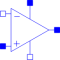

OpAmpDetailedDetailed model of an operational amplifier |

|
Information
This information is part of the Modelica Standard Library maintained by the Modelica Association.
The OpAmpDetailed model is a general operational amplifier model. The emphasis is on separating each important data sheet parameter into a sub-circuit independent of the other parameters. The model is broken down into five functional stages input, frequency response, gain, slew rate and an output stage. Each stage contains data sheet parameters to be modeled. This partitioning and the modelling of the separate submodels are based on the description in [Conelly1992].
Using [Conelly1992] Joachim Haase (Fraunhofer Institute for Integrated Circuits, Design Automation Division) transferred 2001 operational amplifier models into VHDL-AMS. Now one of these models, the model "amp(macro)" was transferred into Modelica.
Parameters (31)
| Rdm |
Value: 2.0e6 Type: Resistance (Ω) Description: Input resistance (differential input mode) |
|---|---|
| Rcm |
Value: 2.0e9 Type: Resistance (Ω) Description: Input resistance (common mode) |
| Cin |
Value: 1.4e-12 Type: Capacitance (F) Description: Input capacitance |
| Vos |
Value: 1.0e-3 Type: Voltage (V) Description: Input offset voltage |
| Ib |
Value: 80.0e-9 Type: Current (A) Description: Input bias current |
| Ios |
Value: 20.0e-9 Type: Current (A) Description: Input offset current |
| vcp |
Value: 0.0 Type: Voltage (V) Description: Correction value for limiting by p_supply |
| vcm |
Value: 0.0 Type: Voltage (V) Description: Correction value for limiting by msupply |
| Avd0 |
Value: 106.0 Type: Real Description: Differential amplifier [dB] |
| CMRR |
Value: 90.0 Type: Real Description: Common-mode rejection [dB] |
| fp1 |
Value: 5.0 Type: Frequency (Hz) Description: Dominant pole |
| fp2 |
Value: 2.0e6 Type: Frequency (Hz) Description: Pole frequency |
| fp3 |
Value: 20.0e6 Type: Frequency (Hz) Description: Pole frequency |
| fp4 |
Value: 100.0e6 Type: Frequency (Hz) Description: Pole frequency |
| fz |
Value: 5.0e6 Type: Frequency (Hz) Description: Zero frequency |
| sr_p |
Value: 0.5e6 Type: VoltageSlope (V/s) Description: Slew rate for increase |
| sr_m |
Value: 0.5e6 Type: VoltageSlope (V/s) Description: Slew rate for decrease |
| Rout |
Value: 75.0 Type: Resistance (Ω) Description: Output resistance |
| Imaxso |
Value: 25.0e-3 Type: Current (A) Description: Maximal output current (source current) |
| Imaxsi |
Value: 25.0e-3 Type: Current (A) Description: Maximal output current (sink current) |
| Ts |
Value: 0.0000012 Type: Time (s) Description: Sampling time |
| vcp_abs |
Value: abs(vcp) Type: Voltage (V) Description: Positive correction value for limiting by p_supply |
| vcm_abs |
Value: abs(vcm) Type: Voltage (V) Description: Positive correction value for limiting by msupply |
| I1 |
Value: Ib + Ios / 2.0 Type: Current (A) Description: Current of internal source I1 |
| I2 |
Value: Ib - Ios / 2.0 Type: Current (A) Description: Current of internal source I2 |
| Avd0_val |
Value: 10.0 ^ (Avd0 / 20.0) Type: Real Description: Differential mode gain |
| Avcm_val |
Value: Avd0_val / 10.0 ^ (CMRR / 20.0) / 2.0 Type: Real Description: Common mode gain |
| sr_p_val |
Value: abs(sr_p) Type: VoltageSlope (V/s) Description: Value of slew rate for increase |
| sr_m_val |
Value: -abs(sr_m) Type: VoltageSlope (V/s) Description: Negative value of slew rate for increase |
| Imaxso_val |
Value: abs(Imaxso) Type: Current (A) Description: Orientation out outp |
| Imaxsi_val |
Value: abs(Imaxsi) Type: Current (A) Description: Orientation into outp |
Connectors (5)
| p |
Type: PositivePin Description: Positive pin of the input port |
|
|---|---|---|
| m |
Type: NegativePin Description: Negative pin of the input port |
|
| outp |
Type: PositivePin Description: Output pin |
|
| p_supply |
Type: PositivePin Description: Positive output voltage limitation |
|
| m_supply |
Type: NegativePin Description: Negative output voltage limitation |
Used in Examples (1)
|
Modelica.Electrical.Analog.Examples Simple Amplifier circuit which uses OpAmpDetailed |